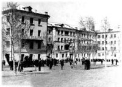
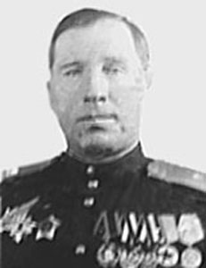
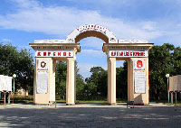

Формирование училища началось в Курске в сентябре 1943 г. в соответствии с Постановлением СНК Союза ССР и ЦК ВКП(б) от 22 августа 1943 г. «О неотложных мерах по восстановлению хозяйства в районах, освобожденных от немецкой оккупации» и было полностью завершено к 1 декабря 1943 г. Училищу было присвоено наименование «Курское суворовское военное училище». Этот день стал днём училища.

Здание Курского СВУ. 1950-е гг. (Из частной коллекции)
Оно разместилось в трех зданиях только что освобожденного от фашистских захватчиков города – бывшем общежитии пединститута, здании клиники областной больницы и в бывшем здании 21-й неполной средней школы. Лишь в августе 1954 г. специально для суворовского училища было восстановлено подходящее комплексное здание по ул. Скорняковской, куда вначале переехали старшие, а в 1956 г. и остальные классы училища.
Первый набор училища составил 504 воспитанника в возрасте от 8 до 14 лет. Около 80% были детьми погибших воинов, 13 мальчишек участвовали в боях в составе действующей армии, 8 – в составе партизанских отрядов. Среди них - суворовец Ваня Сергиенко (окончил училище с золотой медалью в 1951 г.), за отличие в боях удостоенный трех боевых наград. В училище он был направлен с фронта по личной рекомендации маршала Советского Союза Г.К. Жукова.
Командный и преподавательский состав училища формировался в соответствии с Директивой Генерального штаба Красной Армии, которая предписывала для работы в училище «отобрать лучший офицерский состав, имеющий достаточный опыт в педагогической и воспитательной работе и практический стаж в командовании подразделениями и частями Красной Армии. При наличии всех этих качеств преимущество отдавать офицерам, имеющим боевой опыт».

Генерал-майор В.М. Козырев. Начальник Курского СВУ (1943-1946 гг). (Из частной коллекции)
Первым начальником Курского СВУ был назначен генерал-майор Виктор Михайлович Козырев.
Офицерский состав в большинстве своём был подобран с педагогическим образованием из числа участников Великой отечественной войны. Кроме того, педагогическими кадрами училище было доукомплектовано на месте. На преподавательскую работу были приняты учителя из г. Курска, мужчины и женщины, имевшие специальное педагогическое образование и опыт работы по специальности в обычных школах.
С самого начала, несмотря на трудности становления, подавляющее большинство детей относилось к учебе с огромным желанием, о чем свидетельствуют итоги первого выпуска суворовцев, состоявшегося в 1948 г. Из 38 человек 10 были награждены золотой медалью, среди них Геннадий Кузнецов, Николай Поляков, Леонид Широкий, Герман Барышев, Юрий Дедаев.
В сентябре 1945 г. и в августе 1946 г. были проведены дополнительные наборы воспитанников в старший подготовительный класс. При этом принимались мальчики, проживающие на территории Курска и области, а также мальчики из Москвы. В рамках дополнительного приема 1945 г. в училище также были зачислены 10 воспитанников, прибывших из Югославии.
Училище просуществовало в Курске 14 лет - до весны 1957 г., произведя за это время 10 выпусков – 781 человек, из которых 97 человек окончили училище с золотой медалью и 110 – с серебряной.
В связи с недостаточной учебно-методической и материальной базой в городе Курске в апреле 1957 г. в соответствии с решением Совета Министров СССР в училище была объявлена директива Главного штаба Сухопутных войск о предстоящей передислокации училища на Дальний Восток, в город Ворошилов (ныне город Уссурийск). 11 августа 1957 г. Курское суворовское военное училище прибыло к новому месту дислокации и разместились в южном городке, на территории общей площадью около 43-х гектаров. По решению командования войсками Дальневосточного военного округа все помещения южного городка и сама территория были капитально переоборудованы и максимально приспособлены для размещения училища. Значительная площадь , большое количество зеленых насаждений, рассредоточенное размещение личного состава (в каждом помещении не более двух рот) создали благоприятные условия для жизни и общения суворовцев.
Курское (Дальневосточное) СВУ. 1957 г. Уссурийск. (Из коллекции Г.П. Толоконникова)
Учебные занятия начались 1 сентября 1957 г. С тех пор училище стало именоваться: Дальневосточное суворовское военное училище, а с 1964 г. - Уссурийское суворовское военное училище.
В 1957-1958 учебном году впервые в истории суворовских училищ воспитанники предвыпускной и выпускной рот проходили войсковую стажировку в мотострелковых полках. С этого же года, а затем ежегодно, суворовцы участвовали в военных парадах в Хабаровске, а также принимали участие в праздничных демонстрациях во Владивостоке и Уссурийске.
В 1960-1961 учебном году в суворовские училища набор не проводился. По мере выпусков, часть суворовских училищ должна была быть сокращена, а остальные - пополниться за счет сокращенных училищ. Все СВУ с их учебно-материальной базой до 1965 г. должны были быть переданы Министерству просвещения под школы-интернаты.
В 1960 г Дальневосточное суворовское училище не было расформировано и новый учебный год начало в составе шести рот. В 1971 г. училище произвело последний выпуск суворовцев, обучавшихся в течение трех лет. С 1971-1972 учебного года СВУ полностью перешло на систему двухлетнего обучения. В 1992-1993 учебном году коллектив училища готовился к переводу суворовцев на трехлетний период обучения. С 2009 г. СВУ перешло на семилетнее обучение.

Уссурийское СВУ, г. Уссурийск 2014 г. (Из коллекции Г.П. Толоконникова)
В настоящее время училище дислоцируется на том же месте (территория немного сокращена). За весь период существования Курского-Дальневосточного-Уссурийского СВУ (1943-2016 гг.) было произведено 69 выпусков – более 12000 человек. Из них 6 выпускников удостоены звания Героя Советского Союза и Героев Российской Федерации, а также Героя Украины. 30 воспитанников училища стали генералами.